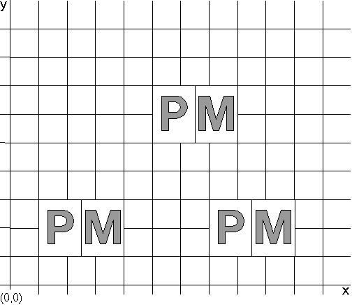

A character cell is an imaginary rectangular boundary that defines the horizontal and vertical space occupied by a single character from an outline character set.
The PM calculates character cell width and height from the point size. The width value for the character cell is the nominal width of the lowercase characters in the character set. In a monospace font, the width of all character cells is identical. In a proportional font, the width of the character cells depends on the character.
In an image font, the height of the character cell is the number of pels in the font. In an outline font, the height of the character cell is the point size of the font.
The characters in a character string are positioned one character per cell. The spacing between adjacent characters in a string is affected by the character cell attribute, except for image characters in CM_MODE1.
Cell width determines the spacing of consecutive characters along the baseline, as illustrated in the following figure.
Character Cell Measurements
Current cell size is specified using GpiSetCharBox. As input, this function accepts the desired height and width of the character cell in world coordinates. These values are related to certain dimensions in the FONTMETRICS structure that controls font attributes. Heights or widths of 0 are valid input and cause the outline character to be drawn as a point or straight line. Heights or widths of negative values cause certain special effects, for example, reversed lettering.
The character cell value affects both the size and position of characters drawn from an outline font, regardless of the current character mode. Each character is scaled up or down to fit the cell size, as shown in the following figure.
Effect of the Character Cell on an Outline Font
The character cell value is ignored if the current font is an image font and the current character mode is CM_MODE1, as shown in the following figure.
Note: It is essential to code the character cell correctly, even if you anticipate using image fonts. In case of a font match failure, an outline font can be substituted for a image font.
Effect of the Character Cell on an Image Font in CM_MODE1
Although the character cell has been both increased and decreased, the character string is unaltered.
The character cell value controls the positioning of image-font characters when the current character mode is CM_MODE2; but it cannot cause the characters to be scaled to fit the cell. This effect is shown in the following figure.
Effect of the Character Cell on an Image Font in CM_MODE2
If you increase the character cell size for an image font in CM_MODE2, the characters are more widely spaced, but their size is not changed. If you decrease character cell size, the space between the characters is reduced, and because the characters themselves cannot be scaled, they can overlap.